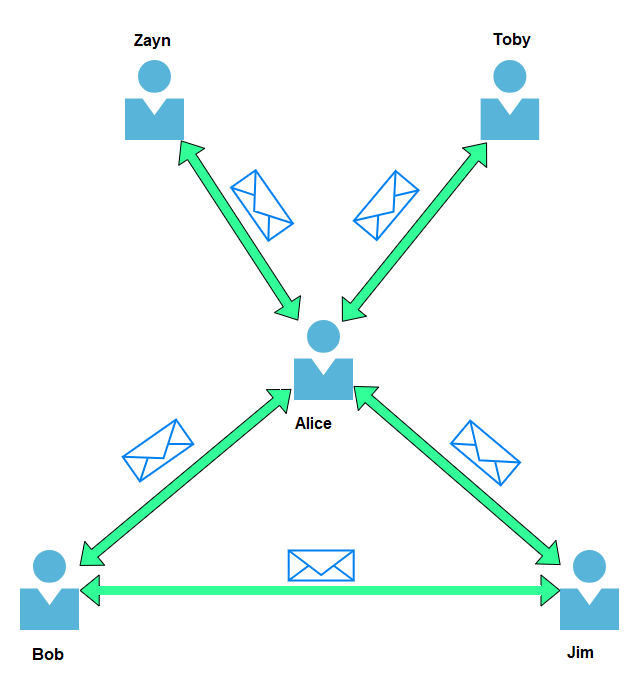

Learning Path: Pre Security
Task 1 - What is Networking ?
Networks are simply things connected. For example, your friendship circle: you are all connected because of similar interests, hobbies, skills and sorts.
Networks can be found in all walks of life:
- A city's public transportation system
- Infrastructure such as the national power grid for electricity
- Meeting and greeting your neighbours
- Postal systems for sending letters and parcels
But more specifically, in computing, networking is the same idea, just dispersed to technological devices. Take your phone as an example; the reason that you have it is to access things. We'll cover how these devices communicate with each other and the rules that follow.
In computing, a network can be formed by anywhere from 2 devices to billions. These devices include everything from your laptop and phone to security cameras, traffic lights and even farming!
Networks are integrated into our everyday life. Be it gathering data for the weather, delivering electricity to homes or even determining who has the right of way at a road. Because networks are so embedded in the modern-day, networking is an essential concept to grasp in cybersecurity.
Take the diagram below as an example, Alice, Bob and Jim have formed their network! We'll come onto this a bit later on.

Correct answer: Network
Task 2 - What is the Internet ?
Now that we've learnt what a network is and how one is defined in computing (just devices connected), let's explore the Internet.
The Internet is one giant network that consists of many, many small networks within itself. Using our example from the previous task, let's now imagine that Alice made some new friends named Zayn and Toby that she wants to introduce to Bob and Jim. The problem is that Alice is the only person who speaks the same language as Zayn and Toby. So Alice will have to be the messenger!

Because Alice can speak both languages, they can communicate to one another through Alice — forming a new network.
The first iteration of the Internet was within the ARPANET project in the late 1960s. This project was funded by the United States Defence Department and was the first documented network in action. However, it wasn't until 1989 when the Internet as we know it was invented by Tim Berners-Lee by the creation of the World Wide Web (WWW). It wasn't until this point that the Internet wasn't used as a repository for storing and sharing information (like it is today).
Let's relate Alice's network of friends to computing devices. The Internet looks like a much larger version of this sort of diagram:

As previously stated, the Internet is made up of many small networks all joined together. These small networks are called private networks, where networks connecting these small networks are called public networks -- or the Internet!
So, to recap, a network can be one of two types:
- A private network
- A public network
Devices will use a set of labels to identify themselves on a network, which we will come onto in the task below.
Correct answer: Tim Berners-Lee
Task 3 - Devices on a Network

Above is a learning path roadmap. The Pre Security path will teach you the technical knowledge you need to get started in cyber security. Once you understand the basics, enroll in either the Offensive Pentesting (ethically hacking systems) or the Cyber Defense (investigating attacks and defending systems) path.
The skills you acquire from the learning paths will prepare you for a career as an ethical hacker, penetration tester or cyber security analyst.
Task 4 - LAN Technologies
Above is a learning path roadmap. The Pre Security path will teach you the technical knowledge you need to get started in cyber security. Once you understand the basics, enroll in either the Offensive Pentesting (ethically hacking systems) or the Cyber Defense (investigating attacks and defending systems) path.
The skills you acquire from the learning paths will prepare you for a career as an ethical hacker, penetration tester or cyber security analyst.
Task 5 - Ping (ICMP)
Above is a learning path roadmap. The Pre Security path will teach you the technical knowledge you need to get started in cyber security. Once you understand the basics, enroll in either the Offensive Pentesting (ethically hacking systems) or the Cyber Defense (investigating attacks and defending systems) path.
The skills you acquire from the learning paths will prepare you for a career as an ethical hacker, penetration tester or cyber security analyst.
Task 6 - ARP Protocol
Above is a learning path roadmap. The Pre Security path will teach you the technical knowledge you need to get started in cyber security. Once you understand the basics, enroll in either the Offensive Pentesting (ethically hacking systems) or the Cyber Defense (investigating attacks and defending systems) path.
The skills you acquire from the learning paths will prepare you for a career as an ethical hacker, penetration tester or cyber security analyst.
Task 7 - Ports
Above is a learning path roadmap. The Pre Security path will teach you the technical knowledge you need to get started in cyber security. Once you understand the basics, enroll in either the Offensive Pentesting (ethically hacking systems) or the Cyber Defense (investigating attacks and defending systems) path.
The skills you acquire from the learning paths will prepare you for a career as an ethical hacker, penetration tester or cyber security analyst.